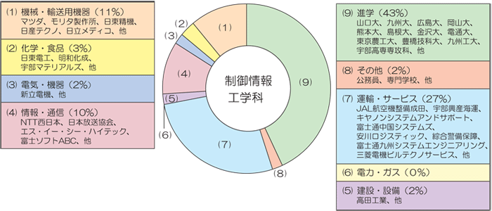

学科について ―卒業後の進路―

就職する
本校の卒業生は社会的評価が高く、企業や官公庁など多くの職場の第一線技術者や研究者として、国の内外で活躍をしています。近年の本校への求人倍率は、常に１０倍以上を維持し、就職希望の卒業生の就職率はほぼ１００％です。学科により就職先の分野が異なっていますので、学科選択の参考にしてください。
※赤字は女子学生の就職先です。
(株)メンバーズ、(株)日立産業制御ソリューションズ、エムシー・ファーティコム(株)、リンク情報システム(株)、(株)NTTデータアイ、
TMCシステム(株)(2名)、西部石油(株)、ディーピーティー(株)、(株)セゾン情報システムズ、(株)ニュージャパンナレッジ、
パナソニック(株)アプライアンス社、三井化学(株)岩国大竹工場、キヤノンマシナリー(株)、(株)BE、(株)西日本情報システム、
(株)ソフトサービス、宇部興産(株)、西日本高速道路(株)、東レエンジニアリング(株)、宇部マテリアルズ(株)、
不二輸送機工業(株)、ディーピーティー(株)、グローブライド(株)、花王(株)、キヤノンシステムアンドサポート(株)、東レ(株)、
アトラス情報サービス(株)、(株)KSF、富士石油(株)袖ヶ浦製油所、マツダ(株)
パナソニックシステムソリューションズジャパン(株)、西部石油(株)、JXTGエネルギー(株)麻里布製油所、東芝情報システム(株)、
出光興産(株)徳山事業所、富士重工業(株)、大分キヤノン(株)、富士ゼロックス山口(株)、アマゾンジャパン(株)、中国電力(株)、
(株)セゾン情報システムズ、TOTO(株)、チームラボ(株)、(株)メンバーズ(2名)、九州旅客鉄道(株)、NTTコムソリューションズ(株)、
(株)アウトソーシングテクノロジー(2名)、関西電力(株)、(株)TAIYO、(株)モリタ製作所、(株)マツダE&T、セイコーエプソン(株)、
(株)西日本情報システム、日本オーチス・エレベータ(株)
日本オーチス・エレベータ(株)、(有)リーズ、KDDIエンジニアリング(株)、日信電子サービス(株)、
中国電力(株)、(株)DERESI(2名)、MHI情報システムズ(株)、(株)安川情報九州、NTTコムソリューションズ(株)、
(株)西日本情報システム、大和製罐(株)、(株)宇部情報システム、キヤノンシステムアンドサポート(株)、宇部蒲鉾(株)、日本信号(株)、
花王(株)、ジョンソンコントロールズ(株)、(株)ハイマックス、(株)日立ビルシステム、
パナソニック(株)オートモーティブ&インダストリアルシステムズ社、(株)エイム、(株)イシダ、
東ソー(株)南陽事業所、(株)LSIテクノ 、(株) NTT PC コミュニケーションズ、ANAベースメンテナンステクニクス(株)、宇部マテリアルズ(株)
ファナック(株)、日本オーチス・エレベータ(株)、宇部情報システム(株)、マツダ(株)(2名(1))、(独)国立印刷局、
宇部興産機械(株)、宇部マテリアルズ(株)(3名)、富士重工業(株)、大阪国際石油精製(株)、宇部情報システム(株)、中国電力(株)、
花王(株)、ANAラインメンテナンステクニクス(株)、新光産業(株)、パナソニックシステムネットワークス(株)、MHI情報システムズ(株)、
(株)安川電機、(株)エヌ・ティ・ティ・エムイー、三浦工業(株)、富士ゼロックスアドバンストテクノロジー(株)、山口県庁
東京コンピュータサービス（株），宇部マテリアルズ（株），キヤノンシステムアンドサポート（株），（株）高田工業所，テルモ山口（株），富士通関西中部ネットテック（株），富士ゼロックスアドバンストテクノロジー（株），アイルモータースクール門司，新光産業（株），（株）NTTファシリティーズ中国，オムロンフィールドエンジニアリング（株），NECネッツエスアイ（株），（株）日立情報通信エンジニアリング，西日本旅客鉄道（株），田辺三菱製薬工場（株），日本放送協会，森永乳業（株），（株）宇部スチール，JX日鉱日石エネルギー（株）水島製油所，JRCS（株），森永乳業（株），富士通（株），NTTコム ソリューションズ（株），富士ゼロックスアドバンストテクノロジー（株），ANAラインメンテナンステクニクス（株），西部石油（株），中国電力（株），（株）日立産業制御ソリューションズ
(独)宇宙航空研究開発機構、(株)日立ビルシステムズ、フジテック(株)、日本オーチスエレベータ(株)、花王(株)、田辺三菱製薬工場(株)、村田機械(株)、(株)NTTぷらら、NTTデータソフィア(株)、東海旅客鉄道(株)、出光興産(株)、ニプロ(株)、(株)エフ・ディー・シー、(株)ヤナギヤ、自衛隊、中国電力(株)、(株)富士通ビー・エス・シー、関西電力(株)、マツダE&T(株)、富士通(株)、ダイキン工業(株)、富士電機(株)、新光産業(株)、東京コンピュータサービス(株)、モリタ製作所(株)、宇部興産機械(株)
日本たばこ産業(株)、(株)富士通九州システムズ、協和発酵バイオ(株)、出光興産(株)、宇部マテリアルズ(株)、日立オートモティブシステムズ(株)、帝人(株)、日立情報通信エンジニアリング(株)、富士通(株)、ムラテックCCS(株)、セイコーエプソン(株)、デンソーテクノ(株)、関西電力(株)、(株)ピージーシステム、(株)アルプス技研、(株)エヌユーエス、(株)タマディック、宇部興産機械(株)、オーカ装置工業(株)、中国電力(株)、西部石油(株)、日本車輛製造(株)、三菱電機ビルテクノサービス(株)
日本オーチスエレベータ(株)、シャープビジネスコンピュータソフトウェア(株)、中国電力(株)、(株)エレテクノス、JX日鉱日石エネルギー(株)、(株)エイアンドティー、ダイソー(株)、ニフティ(株)、出光エンジニアリング(株)、(株)KDDIテクニカノンエンジニアリングサービス、(株)リコー、西部石油(株)、オムロンフィールドエンジニアリング(株)、(株)エヌ・ティ・ティ・データ、東海旅客鉄道(株)、村田機械(株)、(株)JFE電制、(株)富士通ミッションクリティカルシステムズ、アルプス電気(株)、NTTコムソリューション＆エンジニアリング(株)、オーカ装置工業(株)、宇部マテリアルズ(株)、(株)安川情報九州、(株)リコー
(株)日立製作所、丸昭機械(株)、新光産業(株)、(有)森板金製作所、東芝エレベータ(株)、森永乳業(株)、(株)アルメックス、(株)PFU、NOK(株)、富士電機システムズ(株)、(株)宇部情報システム、京セラコミュニケーションシステム(株)、(株)高田工業所、関西電力(株)、東海旅客鉄道(株)、山口県警察
H21
三菱重工業(株)神戸造船所、IFEスチール(株)、雪印乳業(株)、花王(株)、(株)トクヤマ、京セラ(株)、関西電力(株)、出光興産(株)、西日本旅客鉄道(株)、東海旅客鉄道(株)、(株)KDDIテクニカルエンジニアリングサービス
H20
エス・イー・シー・ハイテック、西日本電信電話、大分キヤノン、キヤノンシステムアンドサポート、 コベルコシステム、三和興産、綜合警備保障、太陽鉄工、日東精機、富士ソフトABC、富士通(株)、 富士通九州システムエンジニアリング、富士通中国システムズ、マツダ、三菱電機ビルテクノサービス、 モリタ製作所、安川ロジステック
H19
アイ・エル・シー、富士重工業、西日本電信電話、西日本旅客鉄道、シャープ(2名)、 ジェイエムエンジニアリング、西部石油、三浦工業、トクヤマ、安川電機、富士ソフト、マツダＥ＆Ｔ、 富士通九州システムエンジニアリング、パナソニックエレクトロデバイス、ダイキン工業、 西テレ情報サイエンス、沖電気カスタマアドテック、リコーテクノシステムズ、ＩＮＡＸ、 ムラテック販売、京セラミタジャパン、ＮＥＣネッツエスアイ・エンジニアリング、（株）宇部情報システム、レンゴー（株）、（株）トクヤマ情報サービス、独立行政法人国立印刷局
H18
(株)宇部情報システム、富士通(株)、(株)トクヤマ(2名）、キヤノン(株)(2名)、(株)エイム、 オリンパス(株)、西部石油(株)、山口製油所、独立行政法人国立印刷局、(株)トクヤマ情報サービス、 (株)高田工業所、(株)富士通九州システムエンジニアリング、 (株)吉川システック、 (株)ＪＡＬ航空機整備東京、ミツワ電子(株)、(株)ケイ・シー・シー、(株)ＫＳＫ(2名)、 ＮＥＣネッツエスアイ・エンジニアリング(株)、レンゴー(株)、（株）ジェイエムエンジニアリング、ダイキン工業（株）、西テレ情報サイエンス（株）、（株）沖電気カスタマアドテック、リコーテクノシステムズ（株）、ムラテック販売（株） H17
(株)ジェイエムエンジニアリング、(株)ＪＡＬ航空機整備東京、日信電子サービス(株)、 (株)トクヤマ情報サービス、(株)ディスコ、 ユニチカ(株)、ソニーイーエムシーエス(株)、幸田テック、 西部石油(株)、山口製油所、岩谷瓦斯(株)、大陽日酸(株)、(株)日立製作所・情報制御システム事業部、 (株)シークス、日本貨物鉄道(株)、関西電力(株)、(株)KDDIテクニカルエンジニアリングサービス、 ヤマハモーターアシスト(株)、日本たばこ産業(株)、宇部マテリアルズ(株)
H16
JAL航空機整備成田、日東電工、明和化成、アルメックス、日産テクノ、日立メディコ、富士電機システムズ、三浦工業、建築ヨネダ、高田工業所、TDCソフトウェアエンジニアリング、UBEホテルズ、宇部テクノエンジ、綜合警備保障、日信電子サービス、パオ、三菱電機ビルテクノサービス、ILC、SECハイテック、TASU、アルファシステムズ、常盤商会、日本放送協会、富士ソフトABC、富士通中国システムズ、公務員、TSG
H15
宇部興産海運、宇部マテリアルズ、山橋工業、モリタ製作所、ASE、日信電子サービス、OA研究所、富士通山口情報、日本オーチス・エレベータ、ニッソーサービス、リス、シェープアップハウス、ムラテック販売、タイヨーインターナショナル、新立電機
H14
スカイレールサービス、ティエスティ、アルメックス、富士通九州システムエンジニアリング、三浦工業、ソニーイーエムシーエス、自衛隊、山口県庁、財務省、キャノンシステムアンドサポート、日本オーチスエレベータ、道路通信エンジニア、リコーテクノシステムズ、綜合警備保障、アクティス、システム総合研究所、神田通信機、パナソニックコミュニケーションズ、朝日コンピュータスクール大阪校
H13
日本貨物鉄道、大日精化工業、出光興産、日立製作所、新光工事、相生精機、前本建設、トステム、兵庫県警、東芝エンジニアリング、アクティス、ベンチャーセーフネット、日信電子サービス、富士フィルムメディカル西日本、エス・イー・シー・ハイテック、京セラミタジャパン、日立西サービスエンジニアリング、ベンチャーセーフネット、リコーテクノシステム、綜合警備保障、日本電子データム、日本テレコム、ケーブル・アンド・ワイヤレスIDC、宇部情報システム、大阪ガス
三菱重工業(株)神戸造船所、IFEスチール(株)、雪印乳業(株)、花王(株)、(株)トクヤマ、京セラ(株)、関西電力(株)、出光興産(株)、西日本旅客鉄道(株)、東海旅客鉄道(株)、(株)KDDIテクニカルエンジニアリングサービス
H20
エス・イー・シー・ハイテック、西日本電信電話、大分キヤノン、キヤノンシステムアンドサポート、 コベルコシステム、三和興産、綜合警備保障、太陽鉄工、日東精機、富士ソフトABC、富士通(株)、 富士通九州システムエンジニアリング、富士通中国システムズ、マツダ、三菱電機ビルテクノサービス、 モリタ製作所、安川ロジステック
H19
アイ・エル・シー、富士重工業、西日本電信電話、西日本旅客鉄道、シャープ(2名)、 ジェイエムエンジニアリング、西部石油、三浦工業、トクヤマ、安川電機、富士ソフト、マツダＥ＆Ｔ、 富士通九州システムエンジニアリング、パナソニックエレクトロデバイス、ダイキン工業、 西テレ情報サイエンス、沖電気カスタマアドテック、リコーテクノシステムズ、ＩＮＡＸ、 ムラテック販売、京セラミタジャパン、ＮＥＣネッツエスアイ・エンジニアリング、（株）宇部情報システム、レンゴー（株）、（株）トクヤマ情報サービス、独立行政法人国立印刷局
H18
(株)宇部情報システム、富士通(株)、(株)トクヤマ(2名）、キヤノン(株)(2名)、(株)エイム、 オリンパス(株)、西部石油(株)、山口製油所、独立行政法人国立印刷局、(株)トクヤマ情報サービス、 (株)高田工業所、(株)富士通九州システムエンジニアリング、 (株)吉川システック、 (株)ＪＡＬ航空機整備東京、ミツワ電子(株)、(株)ケイ・シー・シー、(株)ＫＳＫ(2名)、 ＮＥＣネッツエスアイ・エンジニアリング(株)、レンゴー(株)、（株）ジェイエムエンジニアリング、ダイキン工業（株）、西テレ情報サイエンス（株）、（株）沖電気カスタマアドテック、リコーテクノシステムズ（株）、ムラテック販売（株） H17
(株)ジェイエムエンジニアリング、(株)ＪＡＬ航空機整備東京、日信電子サービス(株)、 (株)トクヤマ情報サービス、(株)ディスコ、 ユニチカ(株)、ソニーイーエムシーエス(株)、幸田テック、 西部石油(株)、山口製油所、岩谷瓦斯(株)、大陽日酸(株)、(株)日立製作所・情報制御システム事業部、 (株)シークス、日本貨物鉄道(株)、関西電力(株)、(株)KDDIテクニカルエンジニアリングサービス、 ヤマハモーターアシスト(株)、日本たばこ産業(株)、宇部マテリアルズ(株)
H16
JAL航空機整備成田、日東電工、明和化成、アルメックス、日産テクノ、日立メディコ、富士電機システムズ、三浦工業、建築ヨネダ、高田工業所、TDCソフトウェアエンジニアリング、UBEホテルズ、宇部テクノエンジ、綜合警備保障、日信電子サービス、パオ、三菱電機ビルテクノサービス、ILC、SECハイテック、TASU、アルファシステムズ、常盤商会、日本放送協会、富士ソフトABC、富士通中国システムズ、公務員、TSG
H15
宇部興産海運、宇部マテリアルズ、山橋工業、モリタ製作所、ASE、日信電子サービス、OA研究所、富士通山口情報、日本オーチス・エレベータ、ニッソーサービス、リス、シェープアップハウス、ムラテック販売、タイヨーインターナショナル、新立電機
H14
スカイレールサービス、ティエスティ、アルメックス、富士通九州システムエンジニアリング、三浦工業、ソニーイーエムシーエス、自衛隊、山口県庁、財務省、キャノンシステムアンドサポート、日本オーチスエレベータ、道路通信エンジニア、リコーテクノシステムズ、綜合警備保障、アクティス、システム総合研究所、神田通信機、パナソニックコミュニケーションズ、朝日コンピュータスクール大阪校
H13
日本貨物鉄道、大日精化工業、出光興産、日立製作所、新光工事、相生精機、前本建設、トステム、兵庫県警、東芝エンジニアリング、アクティス、ベンチャーセーフネット、日信電子サービス、富士フィルムメディカル西日本、エス・イー・シー・ハイテック、京セラミタジャパン、日立西サービスエンジニアリング、ベンチャーセーフネット、リコーテクノシステム、綜合警備保障、日本電子データム、日本テレコム、ケーブル・アンド・ワイヤレスIDC、宇部情報システム、大阪ガス
進学する
本校の卒業生の約３０％が進学しています。そのうちの約５０％が本校専攻科で、残りは国立大学３学年への編入学等となっています。全国で約１７０（内、国公立約１３０）の大学が（学部）が、高専生へ門戸を開いており、多数の大学で高専生のための推薦枠を設けています。
※（ ）は女子学生で内数です。
| 進学先 | H30 | H29 | H28 | H27 | H26 | H25 | H24 | H23 | H22 | H21 |
|---|---|---|---|---|---|---|---|---|---|---|
| 宇部高専専攻科 | 3(2) | 5 | 5 | 7 | 8 | 7 | 5(1) | 8 | 5 | 9 |
| 九州工業大・情報工学部 | 4 | 4 | 1 | 3(1) | 2 | 2 | 2 | 2 | 1 | 2 |
| 豊橋技術科学大・工学部 | 1 | 2 | 2 | 2 | 4 | 2 | ||||
| 山口大・工学部 | 1 | 1 | ||||||||
| 九州工業大・工学部 | 1 | 1 | ||||||||
| 九州大・工学部 | 1 | |||||||||
| 九州大・理学部 | 1 | |||||||||
| 九州大・芸術工学部 | 1 | |||||||||
| 熊本大・工学部 | 2(1) | 1 | 1 | 1 | ||||||
| 佐賀大・文化教育学部 | 1 | |||||||||
| 東京農工大・工学部 | 1 | |||||||||
| 電気通信大・電気通信学部 | ||||||||||
| 広島大・工学部 | ||||||||||
| 千葉大・工学部 | ||||||||||
| 筑波大・情報メディア創成学類 | ||||||||||
| 大阪府立大・工学部 | ||||||||||
| 香川大・教育学部 | ||||||||||
| 香川大・法学部 | 1 | |||||||||
| 神戸大・法学部 | ||||||||||
| 愛媛大・理学部 | ||||||||||
| 岡山大・法学部 | ||||||||||
| 岡山大・工学部 | ||||||||||
| 山口県立大 | ||||||||||
| 金沢大・工学部 | ||||||||||
| 島根大・総合理工学部 | ||||||||||
| 鹿児島大・工学部 | ||||||||||
| 長岡技術科学大・工学部 | 1 | |||||||||
| 大阪市立大・理学部 | ||||||||||
| 京都府立大学・人間環境学部 | ||||||||||
| フェリス女学院大・国際交流学部 | ||||||||||
| 北九州市立大・文学部 | 1 | |||||||||
| 静岡大・情報学部 | 1 | |||||||||
| 関西大・総合情報学部 | 1 | |||||||||
| 広島商船高専専攻科 | 1 | |||||||||
| 京都工芸繊維大学設計工学域 | 1 | |||||||||
| 大阪大学基礎工学部 | 1 | |||||||||
| 専門学校 | 1 | 1 | ||||||||
| 計 | 8 | 11 | 8 | 14 | 12 | 14 | 11 | 13 | 17 | 17 |